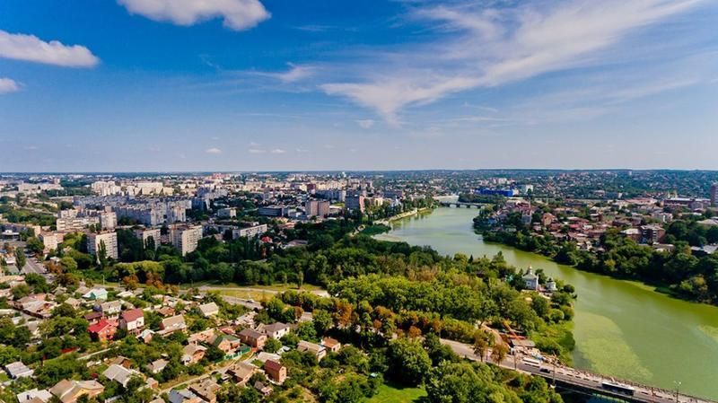

Вінниця
Дуже зелене місто у центральній частині України. У самій Вінниці багато парків, є ботанічний сад, ліс та Сабарівська ГЕС. Сама область має пошану серед любителів зеленого туризму.
Дуже зелене місто у центральній частині України. У самій Вінниці багато парків, є ботанічний сад, ліс та Сабарівська ГЕС. Сама область має пошану серед любителів зеленого туризму.